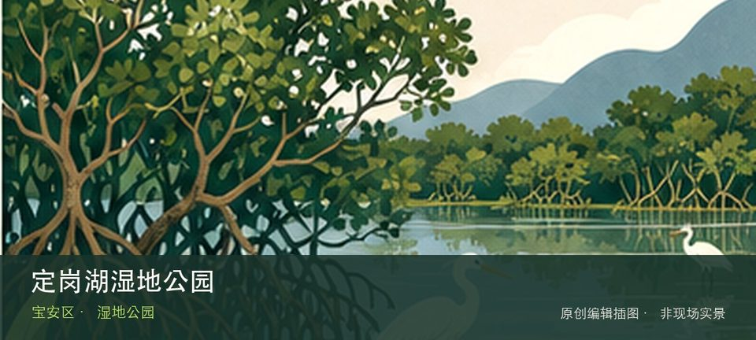

适合谁
适合观鸟、自然教育和安静慢行；不适合携宠、投喂或为拍照进入保育区域。

SHENZHEN GUIDE · 163
松山西路与洪湖路交会处西北侧 · 湿地公园
定岗湖湿地公园位于松山西路与洪湖路交会处西北侧，十公顷级城市湿地以湖体、挺水植物和社区步道提供松岗片区的安静自然观察点。这处地点的内容并不靠规模取胜，定岗湖水体和湿地植物分带才是最值得核对的现场证据。观察重点是定岗湖水体与湿地植物分带之间的生境关系，而不是追逐动物或进入滩涂取景。保持距离、不投喂，并把水位、蚊虫、暴晒和雷雨作为当天是否停留的判断条件。
WHY GO
适合观鸟、自然教育和安静慢行；不适合携宠、投喂或为拍照进入保育区域。
先从定岗湖湿地公园公开入口确认路线，用定岗湖水体建立方向感；只有在时间、天气都允许时才追加湿地植物分带。
公共交通先到松山西路与洪湖路交会处西北侧片区，再以定岗湖湿地公园公开参观入口为终点；多入口地点须按计划游线选择入口，并预先锁定返程站点。
导航至定岗湖湿地公园官方开放入口配套或邻近正规公共停车场；周末满位即改乘公共交通，不在绿道口、村道或消防通道临停。
11 月至次年 3 月通常更适合观鸟；春夏注意蚊虫、暴晒、雷雨与水位变化，不进入生态保育区域。
NEARBY IDEAS
 编辑配图·非现场实景
编辑配图·非现场实景
深圳市海之洋贝壳博物馆位于沙井，贝壳形态、生物分类与海洋生态是核心，不同于单纯工艺品展示，适合从结构差异认识软体动物适应。
 编辑配图·非现场实景
编辑配图·非现场实景
沙井老街位于沙井，旧街、宗祠、蚝乡饮食与社区商业保留珠江口聚落记忆，和蚝文化博物馆组合能避免只把它当餐饮街。
 编辑配图·非现场实景
编辑配图·非现场实景
深圳市宝安区沙井蚝文化博物馆位于沙井老街，围绕蚝田、养殖工具、饮食和沙井社区发展讲述珠江口生产文化，是进入老街前最清楚的蚝乡知识入口。